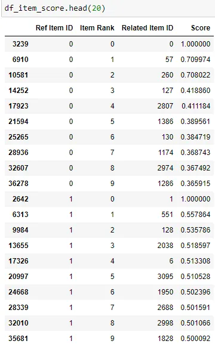
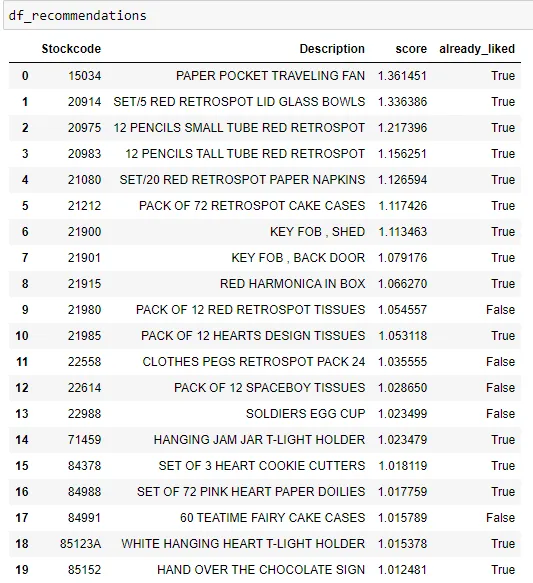

Quick start guide to build a Collaborative Filtering Recommendation System with implicit library in 4 steps
Introduction
While there are various guides, articles and lessons available on building a recommendation system, the implicit library package is discussed less often. In the course of my work, I have found the Implicit library package easy to install, straight forward to use and has fast processing. In this article, I would like to walk through the basic steps to implement a recommendation system with the Implicit package library.
Set up
The implicit library can be installed with the following code. More details can also be found from the PyPI page: https://pypi.org/project/implicit/
pip install implicit
Dataset can be found from the following link: https://archive.ics.uci.edu/ml/datasets/online+retail
Notebook and data can also be found at the following github link:
https://github.com/ZS-Weng/Machine_Learning/tree/main/RecommenderSystem
Step 1: Data Preprocessing
The key data preprocessing step which was found to be useful in building recommender systems is to filter out the outliers e.g. customers who only bought one item, items which are only bought by one customer as it will skew the model and subsequent result.
For our example, we will first identify transactions belonging customers who bought less than the threshold number of items.
df_items_per_cust = (
df_raw.groupby(["CustomerID"]).agg({"StockCode": "nunique"}).reset_index()
)
df_items_per_cust.columns = ["CustomerID", "Count_item_cust"]
# Setting of Threshold
item_in_cust_threshold = 6
# Filtering Results
mask = df_items_per_cust["Count_item_cust"] >= item_in_cust_threshold
valid_cust = set(df_items_per_cust.loc[mask, "CustomerID"].tolist())
df_filter_cust = df_raw[df_raw["CustomerID"].isin(valid_cust)].copy()
invoiceno_filter_cust = set(df_filter_cust["InvoiceNo"].tolist())Next , we will first identify transactions containing items which are bought by more than the threshold number of customers. Thereafter, transactions which meet both conditions will be used as the filtered dataset to perform subsequent operations.
df_custs_per_item = (
df_raw.groupby(["StockCode"]).agg({"CustomerID": "nunique"}).reset_index()
)
df_custs_per_item.columns = ["StockCode", "Count_cust_item"]
df_custs_per_item["Count_cust_item"].value_counts()
# Set threshold
cust_in_item_threshold = 6
#Filter Results
mask = df_custs_per_item["Count_cust_item"] >= cust_in_item_threshold
valid_stockcode = set(df_custs_per_item.loc[mask, "StockCode"].tolist())
df_filter_item = df_raw[df_raw["StockCode"].isin(valid_stockcode)].copy()
invoiceno_filter_item = set(df_filter_item["InvoiceNo"].tolist())
invoiceno_intersect = set.intersection(invoiceno_filter_item, invoiceno_filter_cust)
df_filter_cust_item = df_raw[df_raw["InvoiceNo"].isin(invoiceno_intersect)].copy()Step 2: Data Preparation to Sparse Matrix Format
The implicit library requires data to be in a scipy sparse matrix format. The processed data from step 1 is used as the starting point. We first convert the customer and item IDs into a into a unique id format. Next we group the data by each customer — item pair with a corresponding metrics to be used. In our example, the metrics used is the total quantity purchased. In the final step, we convert the data frame into a scipy csr matrix with the customer, item dimensions and selected met
#Generating Customer and Item IDs
unique_customers = df_filter_cust_item["CustomerID"].unique()
cust_ids = dict(
zip(unique_customers, np.arange(unique_customers.shape[0], dtype=np.int32))
)
unique_items = df_filter_cust_item["StockCode"].unique()
item_ids = dict(zip(unique_items, np.arange(unique_items.shape[0], dtype=np.int32)))
df_filter_cust_item["cust_id"] = df_filter_cust_item["CustomerID"].apply(
lambda i: cust_ids[i]
)
df_filter_cust_item["item_id"] = df_filter_cust_item["StockCode"].apply(
lambda i: item_ids[i]
)
#Use Groupby to get customer in rows, item_id in columns and quantity as the value
df_cust_item_qty = (
df_filter_cust_item.groupby(["cust_id", "item_id"])
.agg({"Quantity": "sum"})
.reset_index()
)
# Create Sparse Matrix
sparse_customer_item = sparse.csr_matrix(
(
df_cust_item_qty["Quantity"].astype(float),
(df_cust_item_qty["cust_id"], df_cust_item_qty["item_id"]),
)
)Step 3: Train Model
There are various algorithms which can be used in the implicit library. For our example we use the Alternating Least Square method and fit the model to the scipy csr matrix created in step 2.
import implicit
model = implicit.als.AlternatingLeastSquares(num_threads=1)
model.fit(sparse_customer_item)Step 4: Generate Results
For a collaborative filtering recommender system, there are two types of results which can be generated from the model:
- Finding Similar Items
- Recommending Items for a User
Finding Similar Items
Given a particular item, a list of closest items can be generated and the number can be adjusted with the N parameter. In the code below, we pass the entire list of unique items as an array for the similar items to be generated.
ref_item_id = df_filter_cust_item["item_id"].unique()
item_arr, score_arr = model.similar_items(ref_item_id, N=10)From the array of items and scores, we convert them into Data Frames and unpivot the values using pd.melt method.
df_item_temp = pd.DataFrame(item_arr)
df_item_temp["Ref Item ID"] = ref_item_id
df_item_rank = pd.melt(
df_item_temp,
id_vars=["Ref Item ID"],
var_name=["Item Rank"],
value_name="Related Item ID",
)
df_score_temp = pd.DataFrame(score_arr)
df_score_temp["Ref Item ID"] = ref_item_id
df_score_rank = pd.melt(
df_score_temp, id_vars=["Ref Item ID"], var_name=["Item Rank"], value_name="Score"
)
df_item_score = df_item_rank.merge(
df_score_rank, how="inner", on=["Ref Item ID", "Item Rank"]
)The resulting details will be a list of N items for every reference item that was passed in. The item in rank 0 will always be the reference item itself by default.

Recommending Items for a User
Given a user and the user preferences based on items purchased, the model can generate a list of recommending items bought by customers with similar preferences. Below is the code used to generate the items and convert them into a data frame.
ids, scores = model.recommend(
cust_id, sparse_customer_item[cust_id], N=20, filter_already_liked_items=False
)
list_stockcode = df_item_desc[df_item_desc["item_id"].isin(ids)]["StockCode"].tolist()
list_desc = df_item_desc[df_item_desc["item_id"].isin(ids)]["Description"].tolist()
df_recommendations = pd.DataFrame(
{
"Stockcode": list_stockcode,
"Description": list_desc,
"score": scores,
"already_liked": np.in1d(ids, sparse_customer_item[cust_id].indices),
}
)
Conclusion
This article aims to provide a quick start guide covering the essential steps in building an initial recommender system with collaborative filtering. The implicit library package is what I personally found to be easy to install, user friendly and has robust performance.
Thank you for reading and hope this was useful in some way !